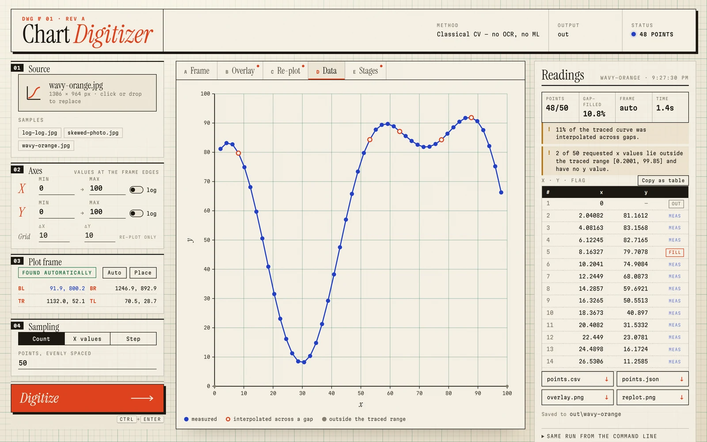
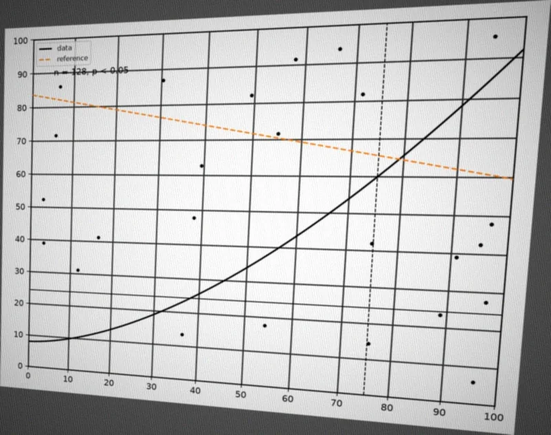
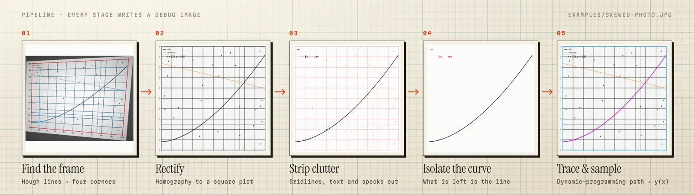
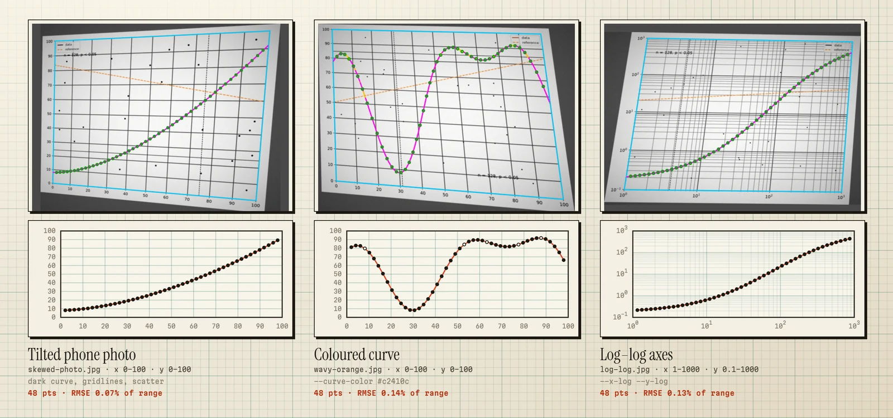
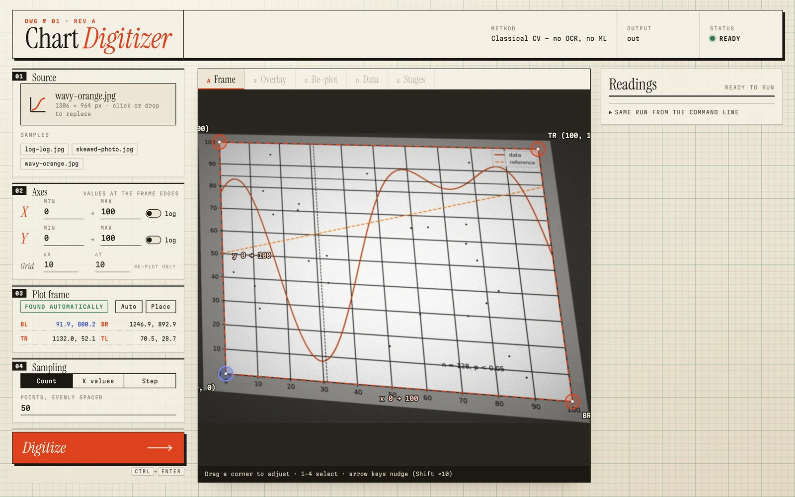
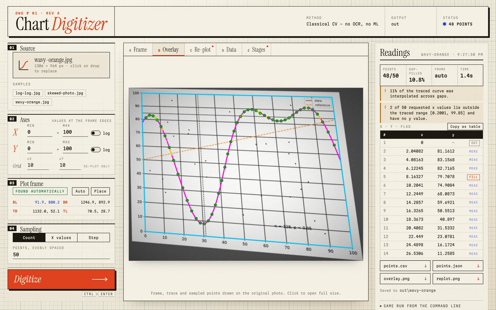
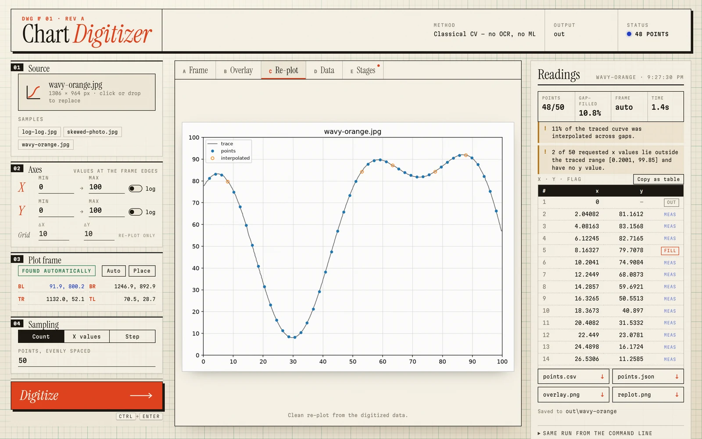

Finds and straightens the plot
The frame is detected with Hough lines and warped upright with a homography, undoing perspective and rotation.
Open-source plot digitizer · MIT
Chart Digitizer turns a phone photo of a printed line chart into clean x, y data: CSV, JSON and a re-plot. It finds the plot, undoes the perspective, strips the gridlines and text, and traces the curve. You type the axis ranges; it does the rest.


Most digitizers expect a tidy screenshot and a lot of clicking. Chart Digitizer is for the curve in a datasheet, a figure in an old paper or a chart on a whiteboard, photographed at an angle in bad light.
The frame is detected with Hough lines and warped upright with a homography, undoing perspective and rotation.
Gridlines, reference lines, scatter points, legends and text are removed, but the curve is kept where it crosses them.
Dynamic programming traces the dominant curve, or the one matching --curve-color. Short hidden stretches are bridged and flagged.
Either axis or both can be logarithmic. Sample at N points, at a fixed step, or at exactly the x values you need.
Every point is flagged measured, gap-filled or out of range. No extrapolation. Errors name the stage that failed and what to try.
No cloud, no API keys, no models to download. The web app listens on 127.0.0.1 only.
Long straight lines are grouped into the four plot corners and a homography warps the plot square. Shading is divided out, gridlines and text are removed by morphology, the curve's ink is picked out in CIELAB, and a dynamic-programming path traces it. Every stage is classical and inspectable. Run with --debug, or open the Stages tab in the web app, to see the image after each one.

Measured on synthetic charts with simulated camera damage, where the true curve is known exactly. Error is RMSE as a percentage of the y-range, for the worst chart in each set.

| Charts | Corners | Worst RMSE |
|---|---|---|
| Clean | exact | 0.07% |
| Gridlines, reference lines, text | exact | 0.26% |
| Plus perspective, blur, noise, shading | exact | 0.28% |
| Degraded | automatic | 0.28% |
| Log axes | exact | 0.08% |
| Log axes | automatic | 0.16% |
On a real photo
A phone photo of a printed datasheet chart: all seven hand-read check points within ±1.5% of full scale, with corners found automatically.
One curve per run, as a function of x. You supply the axis ranges; that is the price of no OCR. See the limitations.
Drop in a photo, check the corners with a magnifying loupe, press Digitize. Hover the chart to find a row in the table, copy it into a spreadsheet, or download CSV and JSON.



You need Python 3.11+ and uv. Works on Windows, macOS and Linux.
$ git clone https://github.com/ov9bo/Chart-Digitizer.git $ cd Chart-Digitizer $ uv sync
# a photo, with the axis ranges $ uv run digitize chart.jpg --x-range 0,100 --y-range 0,100 # or the web app at 127.0.0.1:8765 $ uv run digitize-ui
Out come points.csv, points.json, overlay.png and replot.png. Batch a folder with uv run digitize charts/. Full options are in the README.
Run uv run digitize chart.jpg --x-range LO,HI --y-range LO,HI, or start the web app with uv run digitize-ui and drop the image in. The curve comes back as x, y pairs in points.csv and points.json, at 50 evenly spaced x values by default or at the x values you choose.
Yes, that is what it is for. It finds the plot frame, corrects perspective and rotation, flattens uneven lighting, and removes gridlines and annotations before tracing. If the frame isn't found, you click the four corners yourself.
WebPlotDigitizer is an excellent, mature tool for picking points on clean chart images, and handles bar and polar charts too. Chart Digitizer is aimed at photos of line charts: it straightens the plot, strips clutter and traces the whole curve automatically, and can batch a folder unattended from the command line.
Predictability. Every stage is classical and inspectable, it runs offline with a few well-known dependencies, and it either gives an answer you can check against the overlay or tells you which stage failed and why. Typing four axis numbers is a small price for that.
No. The command-line tool makes no network connections, and the web app serves on 127.0.0.1 and rejects requests from other sites.